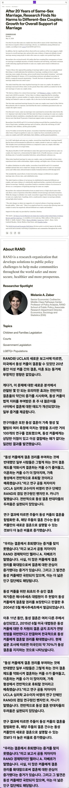
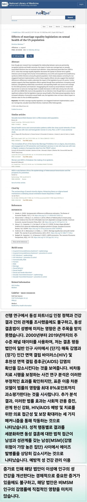

자료 출처:
https://www.rand.org/news/press/2024/05/13/index1.html
https://pubmed.ncbi.nlm.nih.gov/36165350/
1. 동성결혼을 제도화해서 인정하면 파트너와 안정적 관계를 맺으며 문란한 관계가 상당히 줄어듬
결혼이라는 제도는 성병 창궐의 카운터고, 동성결혼을 인정함으로서 다수의 파트너와 하는 동성애자가 들어들며 성병이 감소하게 됨
2. 동성결혼을 인정하면 출산율이 감소될거라고 생각을 하는데
동성애자는 어차피 어떻게 하든 출산율에 영향을 줄수 없는 사람들임
그런데 이들을 부부로 인정하고 이들이 입양을 통해 부모없는 아이들을 보육하면 다음 세대를 키워주는 기반 역할을 할 수 있음
이들을 부부로 인정하지 않으면 이들은 아예 어떤식으로든 아이 보육에 기여할수 없게 됨
결론은 동성애자 커플을 결혼이라는 제도권 안으로 들여온다면
이들은 파트너끼리만 관계를 하게끔 유도할수 있고 이로인해 성병이 감소하며
아이입양을 통해 아이 보육에도 일정부분 기여할 수 있다는 논리
똥게이새끼들 신나서 기어나오죠?